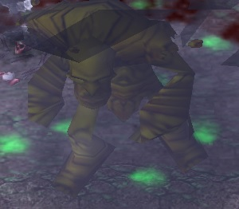

Shooter on Zombie Lord
Give your orb to two heros with lowest amount of HP.
If you see Infection skill spread, use your W after 1-2 seconds delay.
This way your spell will not only clear poison, but also shield off Infection Explosion later.
Use your W to clear Posion when zombie starts rejuvenating, cooldown for this skill is low enough for you to get it back on time for Infection.
There is trick to swap orb to someone else directly after using W, this way you can shield 3, and start healing other 3 at same time.
If Zombie spread Infection and you have your T spell active, you wont get Infected even if green projectile hits you.
If one of your allies gets -60% healing or more, make sure to use W spell on him to clean negative effect.